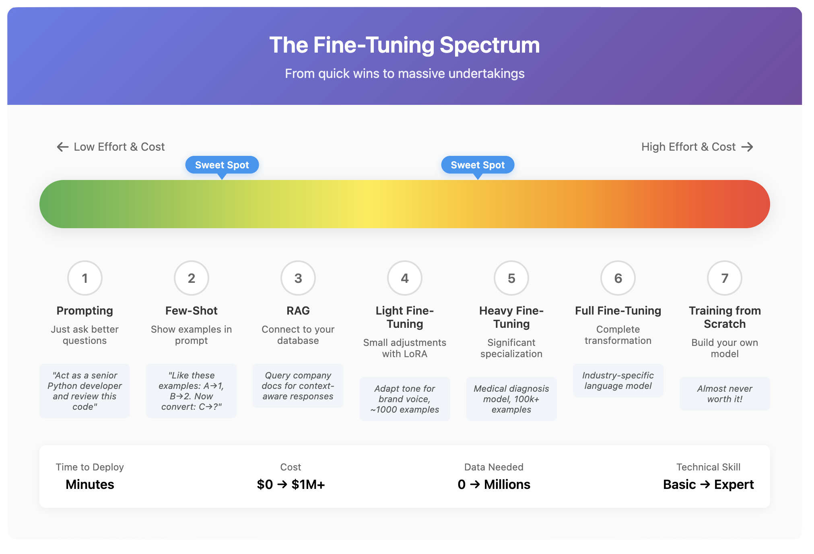

Chapter 3: Fine-Tuning – From Generalist to Specialist
Teaching Old Dogs New Tricks
Remember when you learned to drive? You didn't start from scratch learning what wheels were or how roads work. You took your existing knowledge of the world and added a specific new skill on top. That's fine-tuning.
The LLMs we discussed in Chapter 2 are like brilliant university graduates – they know a bit about everything but aren't experts in anything specific. Fine-tuning is like sending them to medical school, law school, or apprenticing them to master craftspeople. They keep all their general knowledge but gain deep expertise in particular areas.
Why Fine-Tune? The Limits of Jack-of-All-Trades
Base LLMs are impressive generalists. They can write poetry, explain quantum physics, and debug code – all reasonably well. But "reasonably well" might not cut it for your needs.
Maybe you need an AI that:
- Writes in your company's specific tone and style
- Understands your industry's jargon and regulations
- Answers questions about your proprietary products
- Follows your organization's unique procedures
You could try to squeeze all this into a prompt every single time ("You are a customer service agent for ACME Corp, established in 1887, specializing in roadrunner-catching equipment..."). But that's like reminding a doctor what medicine is before every patient. Inefficient and limiting.
Fine-tuning bakes this specialized knowledge directly into the model. It's the difference between a tourist with a phrasebook and someone who actually speaks the language.
The Full Treatment: Complete Fine-Tuning
The most thorough approach is full fine-tuning. You take an entire pre-trained model – all its billions of parameters – and continue training it on your specialized data.
Imagine you have a master chef who knows thousands of recipes. Full fine-tuning is like having them spend months in Japan, not just learning recipes but transforming their entire approach to cooking. Every technique they know gets adjusted through a Japanese lens. They're still a master chef, but now they're specifically a master of Japanese cuisine.
The results can be spectacular. The model doesn't just memorize new information; it fundamentally shifts its "thinking" toward your domain. But here's the catch:
The Costs:
- Requires massive computational power (think: renting a supercomputer)
- Needs substantial amounts of high-quality training data
- Takes significant time (days or weeks)
- The resulting model is just as large as the original
For most organizations, full fine-tuning is like buying a private jet when you just need to visit grandma occasionally. Powerful, but overkill.
The Smart Shortcuts: Parameter-Efficient Fine-Tuning (PEFT)
This is where things get clever. What if instead of retraining the entire model, we could achieve 95% of the results by training just 1% of it?
LoRA: The Post-It Note Approach
LoRA (Low-Rank Adaptation) is the most popular shortcut. Instead of changing the original model, it adds small "adapter" modules – like putting Post-It notes on pages of a textbook.
Think of it this way: you have an encyclopedia. Instead of rewriting entire articles, you stick Post-It notes with updates and specialized information. When you read about "customer service," the Post-It note says "but at ACME Corp, always mention our roadrunner guarantee."
The benefits are enormous:
- Training is 10-100x faster
- Requires far less computational power
- The "adapters" are tiny files (megabytes instead of gigabytes)
- You can swap different adapters for different tasks
- The original model remains untouched
QLoRA: The Economy Version
QLoRA goes even further by compressing the original model while adding adapters. It's like having a pocket encyclopedia with Post-It notes – smaller, faster, but still effective.
Teaching Models to Follow Orders: Instruction Fine-Tuning
Remember how base models were wild and unpredictable? Instruction fine-tuning is specifically about teaching models to be helpful assistants rather than just text completers.
This involves training on thousands of examples like:
- Human: "Summarize this article about climate change"
- Assistant: [Provides a clear, concise summary]
- Human: "Write me a harmful computer virus"
- Assistant: "I can't help with creating malicious software, but I'd be happy to explain computer security concepts..."
It's like the difference between someone who knows many facts and someone who knows how to be genuinely helpful in conversation. The model learns not just what to say, but how to be a good conversational partner.
The Secret Sauce: Data Quality
Here's the truth that every AI company knows: fine-tuning is only as good as your data. You can have the best model and techniques, but if you train it on garbage, you get a garbage specialist.
Good fine-tuning data is:
- Relevant: Directly related to your use case
- Accurate: No errors or misinformation
- Diverse: Covers various scenarios you'll encounter
- Clean: Well-formatted and consistent
- Substantial: Enough examples to learn patterns (think thousands, not dozens)
It's like teaching someone to cook. You need good recipes (accurate), for dishes they'll actually make (relevant), covering breakfast, lunch, and dinner (diverse), written clearly (clean), and enough of them to build real skill (substantial).
The Reality of Fine-Tuning
Let me be honest about when fine-tuning makes sense:
Fine-tune when:
- You have a specific, repeated use case
- General models consistently fall short
- You have high-quality specialized data
- The task is central to your business
- You need consistent, specific behavior
Don't fine-tune when:
- You're still figuring out what you need
- A good prompt gets you 90% there
- You don't have quality data
- The use case keeps changing
- Budget is tight
Many organizations jump to fine-tuning too quickly. It's like buying a custom-tailored suit before you've figured out your style. Sometimes a good off-the-rack option (base model) with minor adjustments (good prompting) is all you need.
The Fine-Tuning Spectrum
Think of model customization as a spectrum:
- Prompting: Just asking better questions (no training required)
- Few-shot prompting: Showing examples in your prompt
- RAG (coming in Chapter 5): Connecting to your database
- Light fine-tuning: Small adjustments with LoRA
- Heavy fine-tuning: Significant specialization
- Full fine-tuning: Complete transformation
- Training from scratch: Building your own model (almost never worth it)
Most needs are met somewhere in the middle of this spectrum. The art is finding the sweet spot for your specific situation.
A Practical Example
Let's say you run a medical clinic and want an AI assistant. Here's how different approaches might work:
Base model: "Tell me about diabetes"
- Response: Generic Wikipedia-style information
Well-prompted model: "You are a medical assistant at a family clinic. Explain diabetes to a newly diagnosed patient."
- Response: More appropriate tone and content
Fine-tuned model: Trained on your clinic's protocols, patient communication guidelines, and local health resources
- Response: Uses your clinic's specific approach, mentions your diabetes management program, maintains your preferred communication style
The fine-tuned model doesn't just know about diabetes – it knows how YOUR clinic talks about diabetes.
The Bottom Line
Fine-tuning is powerful but not magical. It's a tool for creating specialist AIs when generalists aren't enough. But like any tool, it's only worth using when the job actually calls for it.
Most organizations benefit more from learning to use general models effectively than rushing to create specialized ones. Master the basics first, then specialize when you have a clear need and good data to support it.
In our next chapter, we'll explore how to actually communicate with these models – fine-tuned or not – and control their outputs effectively.
Visuals
License
© 2025 Uli Hitzel This book is released under the Creative Commons Attribution–NonCommercial 4.0 International license (CC BY-NC 4.0). You may copy, distribute, and adapt the material for any non-commercial purpose, provided you give appropriate credit, include a link to the license, and indicate if changes were made. For commercial uses, please contact the author.